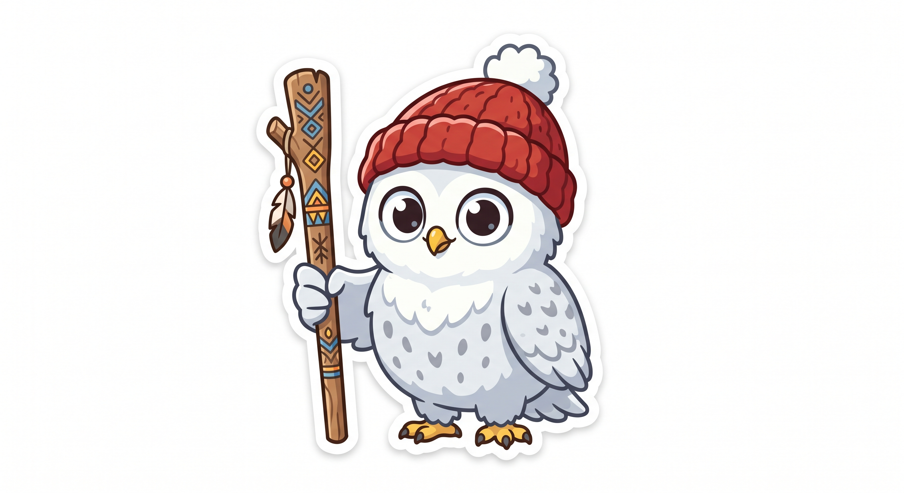
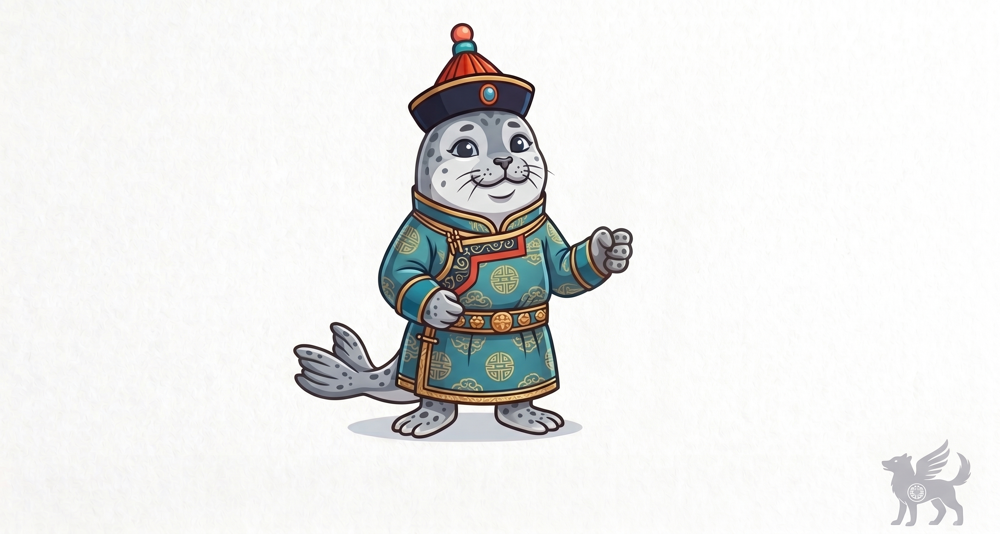

🦉'" class="w-full h-full object-cover rounded-lg">Первая образовательная этно-платформа, решающая ключевую проблему: нехватку живых носителей для разговорной практики. Общайтесь на редких языках с умным нейропомощником Совёнком Туманом в любое время и в комфортном темпе!
«Я помогу тебе освоить живой диалог, отвечу на сложные вопросы грамматики и поддержу разговор на редких языках народов России!»
В большинстве редких языков носителями остались лишь представители старшего поколения, проживающие в отдалённых уголках страны. Найти человека, готового регулярно общаться с начинающим учеником, крайне сложно.
Ни одно существующее приложение на российском рынке не предлагает разговорной практики с искусственным интеллектом для языков народов РФ. «ТУМАН» — первое решение со встроенной языковой моделью, обученной тонкостям грамматики и культурного этикета.
Общайтесь текстом и голосом в любое удобное время без страха сделать ошибку.
ИИ анализирует диалог и сам формирует упражнения по темам, вызвавшим трудности.
По данным ЮНЕСКО и Всероссийской переписи, классические форматы уступают смартфонам, а разрыв между поколениями продолжает расти.
Уникальное культурное и языковое разнообразие страны.
Языки в уязвимом положении, требующие немедленной защиты.
Количество говорящих стремительно уменьшается с каждым годом.
Молодёжь редко использует язык предков в ежедневном общении.
В каждом регионе вас встречает тотемный проводник в традиционном костюме. Нажмите на карточку, чтобы услышать и прочесть приветствие!
Последовательная система освоения родной речи — от знакомства с культурой до уверенного диалога.
Пользователь открывает карту РФ и выбирает интересующий народ и диалект.
Появляется Туман и этно-проводник региона с приветствием на родном языке.
Короткие блоки по 5–10 минут: карточки, аудирование, живые фразы и тесты.
Обычаи, сказки и закрепление навыков в живом чате с ИИ-Туманом.
Переключайтесь между базовым тестом и живым диалогом с нейропомощником Совёнком Туманом!

🦭'" class="w-full h-full object-cover">Платформа готова к пилотному запуску со школами, регионами и этнографическими институтами России.
Дополнительные модули с умным ИИ-тьютором для региональных школ и уроков родного языка.
Подключение подписки и тематических этно-курсов к государственной программе популяризации культуры.
Сохранение редких диалектов, сказок, аудиозаписей старейшин и фольклора в облачном хранилище с ИИ-поиском.
Оставьте заявку от школы, исследовательской группы или станьте носителем языка